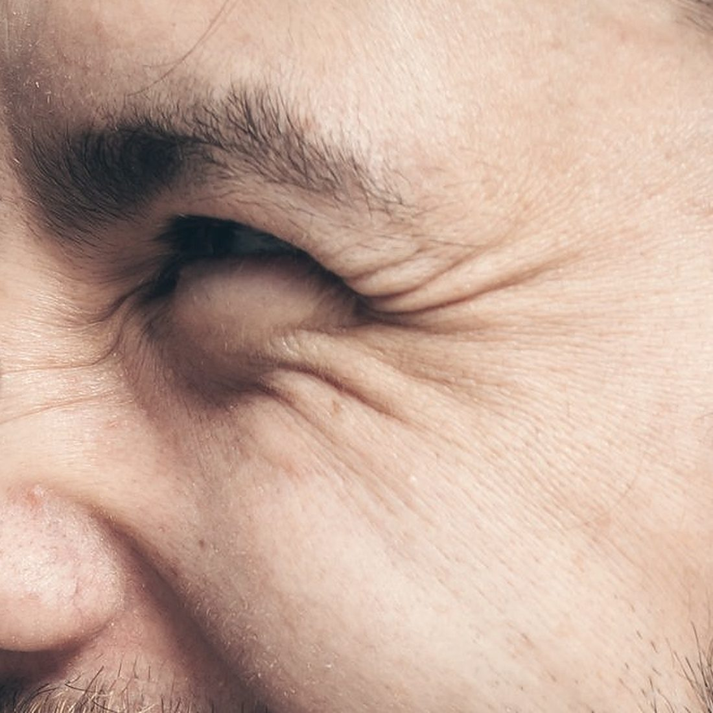

Muscle relaxant
Wrinkles · teeth grinding · sweating · migraine
A muscle relaxant gently relaxes individual facial muscles. Expression lines soften while your face keeps its natural expression. The same principle also helps with teeth grinding, excessive sweating and chronic migraine.
- Forehead lines, frown lines, crow’s feet
- Bunny lines, chin, fine lines on the upper lip
- Teeth grinding and tense jaw muscles (bruxism)
- Excessive sweating of the underarms and hands (hyperhidrosis)
- Chronic migraine: only after a diagnosis by a neurologist
- Other areas: neck and jawline (platysma), corners of the mouth, trapezius and more
